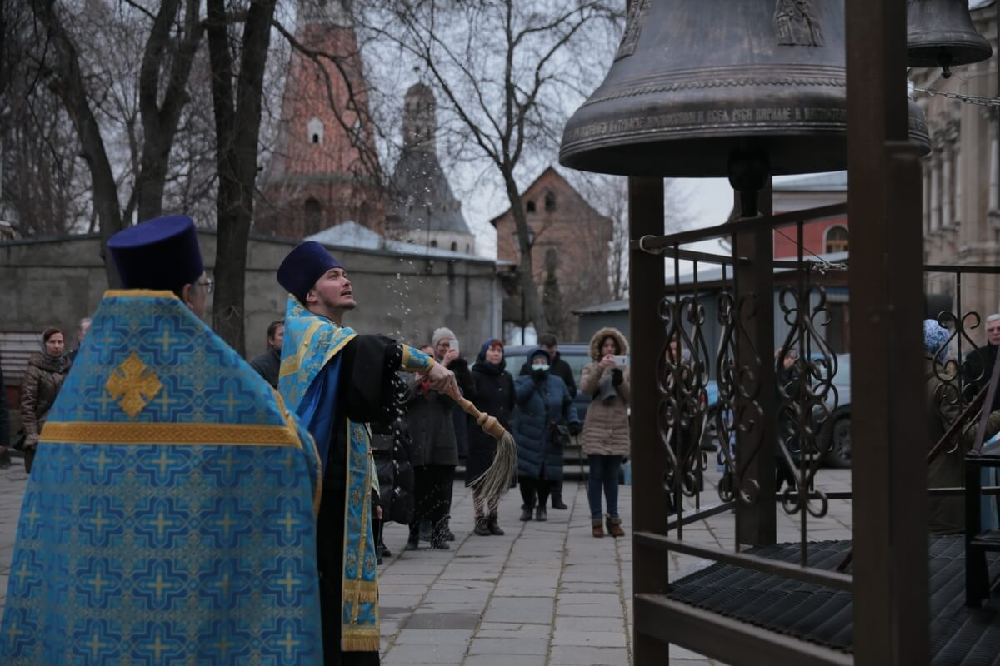
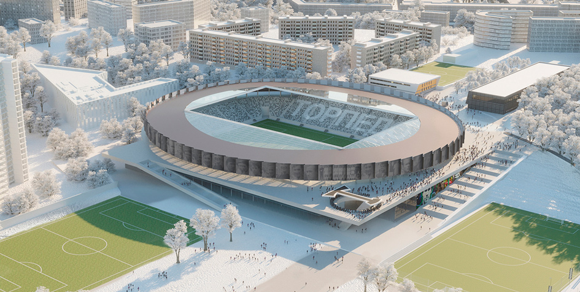

Храм Симонова монастыря обрел «голос» благодаря CтройДом
- Группа компаний «СтройДом» оказала помощь в приобретении 10 колоколов для Храма Тихвинской иконы Божией Матери. Торжественная установка на временную звонницу и чин освящения новых кампанов состоялись на территории Симонова монастыря в преддверии праздника.
Колокола отлиты в городе Тутаев, мастерами всемирно известной династии Шуваловых. Они украшены орнаментом с изображением Тихвинской иконы Божией Матери, препободного Сергия Радонежского, а также насельников Симонова монастыря: святителя Ионы, митрополита Московского, святителя Иова, патриарха Всероссийского, преподобного Кирилла Белоезерского, преподобного Ферапонта Можайского, священникомученика Андроника.
Установка новой звонницы стала ещё одним важным шагом в деле восстановления Тихвинского храма и всего Симонова монастыря. В советское время он был частично разрушен.

CтройДом начинает реконструкцию арены стадиона «Торпедо»
- 20 декабря на центральном поле стадиона «Торпедо» спортивного комплекса им. Э. А. Стрельцова состоялась символическая церемония прощания с исторической ареной.
Для поклонников ФК «Торпедо Москва», титульным спонсором которого является Группа компаний «СтройДом», был организован концерт, автограф-сессия игроков, фотовыставка и раздача исторических кресел.
Центральным событием праздника стал футбольный матч, главными действующими лицами которого были фанаты «Торпедо». Они были разделены на две команды, отсылающие к цветам клуба: "Чёрные" и "Белые". Памятная игра - последняя на старой арене, после чего стадион будет закрыт на реконструкцию.
Архитектурная концепция нового стадиона "Торпедо" разработана французским архитектурным бюро MICHEL REMON & ASSOCIES. Проект предполагает развитие территории всего спорткомплекса, включая улично-дорожную часть.
Реконструкция стадиона "Торпедо" ведётся в рамках масштабного редевелопмента бывшей промзоны в районе Симоновской набережной, который Группа компаний "Инград" ведёт совместно с Правительством Москвы. Завершить строительство новой арены планируется в 2024 году, к столетию футбольного клуба "Торпедо".